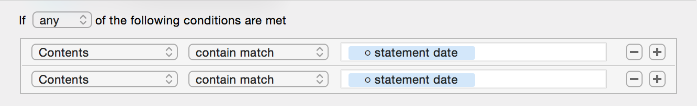
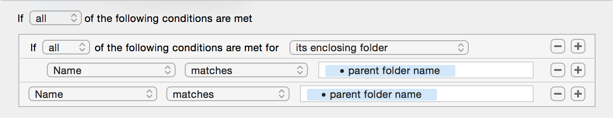

Custom Attributes
In Hazel, you can create your own Custom Attributes. These behave much like the built-in attributes, like "Name" or "Date Added", except that you can use whatever name you want and fill it in with values from different places.
Creating a Custom Attribute
There are a couple ways to create your own attributes.
- From a match pattern. See Custom Tokens (Pattern Matching).
- Export attributes from an AppleScript or (on OS X 10.10 or later) JavaScript. See Writing AppleScript for more details on how to do this.
Using a Custom Attribute
Once created, your Custom Attributes will appear in any conditions/actions afterwards wherever you find regular attributes. Examples include:
- On the left hand side of conditions. Custom Text Attributes can be matched like any other text-based attribute and date attribute can be likewise used in conditions like any other date. They can even be compared to other date attributes, regular or custom.
- In other match patterns. When you use a Custom Attribute in another match pattern, note that it behaves a bit differently. Mainly, Custom Attributes are effectively shared between patterns. See Re-using Custom Attributes below.
- For patterns in actions, Custom Attributes can be used just like any other attribute. They even have the formatting options regular attributes have.
Re-using Custom Attributes in Condition Patterns
If you define a custom attribute in a condition, that attribute is available to subsequent conditions. The attribute is effectively shared between all the conditions that use it. You can even specify different patterns for each case.
The first time it successfully matches, it retains that value for the rest of the rule. That means that once a value is assigned to that Custom Attribute, subsequent uses of that attribute in the same rule for the same file, must match the same value.
For a text attribute, the exact text must match in subsequent usage. In such a case, the pattern for that token is ignored. For a date attribute, the pattern is still used to transform the text into a date. The resulting date, though, must match the previously matched date.
Take, for example, the following:
Here, though, you can't see it, each use of the custom attribute has a different date format. This allows you to match dates that may appear in different formats. So, you can match for dates like Dec 31, 2014 or 2014-12-31 in the same rule. Since we are matching "any", only one of the conditions needs to match so subsequent cases are ignored. When the custom attribute is used in an action, it will have the value captured from the first condition that matched.
Now let's look at another example:
Again, not shown, but the custom attribute here is defined as matching anything. The first instance matches the name of the file's parent folder, as indicated by the pop-up in the nested condition. The next instance matches the name of the file itself. The first time it matches, the name of the parent folder is captured into the custom attribute. When the custom attribute is used again in the next case, it must match the text that was captured before (note that the rule is set to match "all"). So, what this example essentially does is match a file if its name matches that of its parent folder.
Using custom attributes in this way opens up new possibilities in being able to correlate a file against its parents, it's siblings, or a folder against its sub-files.